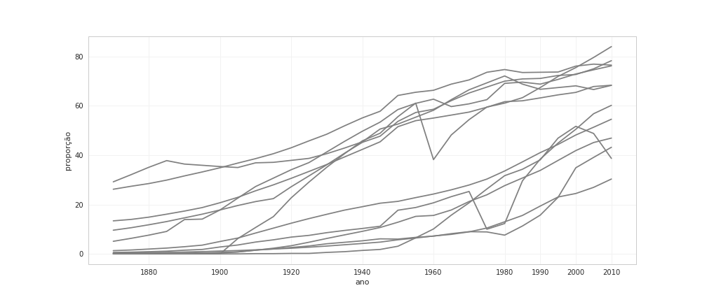
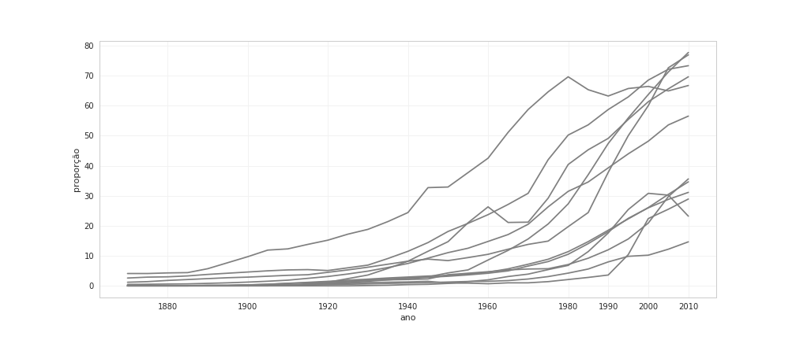
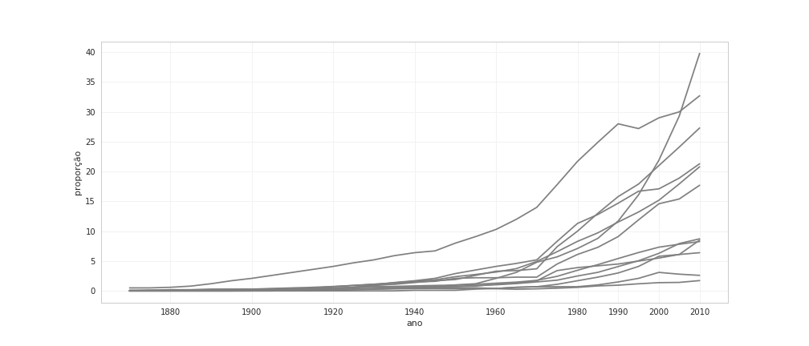

Educação brasileira
uma visão comparativa de longo prazo
Lincoln Frias e Patrícia de Siqueira Ramos
Quantos % dos brasileiros maiores de 25 anos têm:
- ensino fundamental
- ensino médio
- ensino superior
?
Fonte dos dados
- barrolee.com
- baseado em censos nacionais e extrapolações.
- BARRO, R.; LEE, J. Education matters: global schooling gains from the 19th to the 21st century. Londres: Oxford Univ. Press, 2015.
lincolnfrias.org/slides/educacao
Ensino fundamental: qual é o Brasil?

Ensino médio: qual é o Brasil?

Ensino superior: qual é o Brasil?

O futuro
taxa de matrícula da faixa etária correspondente
|
nível de instrução
(%) |
taxa de matrícula
(%) |
| fundamental |
60 |
100 |
| médio |
35 |
83 |
| superior |
8 |
25 |
lincolnfrias.org/slides/educacao